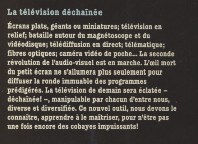

Le livre, La télévision déchaîné de Laurent Broomhead et Pierre Kohler
Plongez dans l'univers fascinant de la télévision de demain avec "La télévision déchaînée", un ouvrage visionnaire écrit par Laurent Broomhead et Pierre Kohler en 1980. Ce livre captivant vous emmène dans un voyage à travers les innovations technologiques qui allaient révolutionner notre expérience télévisuelle. Bien que écrit il y a plus de 40 ans, ce livre résonne étonnamment avec notre concept de télévision immersive basée sur la réalité augmentée.
Des prédictions étonnantes par l’auteur
Les écrans miniatures : On parle ici d’écrans de téléphones (faisant la même chose que les télévisions) qui, à cette époque, n’existaient pas. Cette prédiction était correcte vue la qualité des smartphones que nous avons aujourd’hui, autant visuellement que technologiquement.
Les écrans du futurs : Le livre évoque l'arrivée d'écrans révolutionnaires, incluant des modèles plats, géants et même miniatures. Cette prédiction s'est largement réalisée avec nos téléviseurs LED ultra-minces.

Exemple d'écran du futur
La télévision en relief : Les auteurs anticipent une expérience télévisuelle en trois dimensions, préfigurant les tentatives de TV 3D et, d'une certaine manière, la réalité virtuelle actuelle.
De nouveaux supports de stockage : L'ouvrage mentionne la "bataille" autour du magnétoscope et du vidéodisque, annonçant l'ère du numérique et du streaming. Faire des vidéos de plus en plus réduites en terme de taille et des disques de plus en plus gros en terme de stockage sont aujourd’hui des aspects importants dans la technologie.
Ces idées, qui paraissaient futuristes à l'époque, certaines sont devenues réalité et d’autres préfigurent notre télévision immersive.

Extrait du livre qui prouve que les auteurs étaient avant-gardistes
Un pont entre passé et futur

Notre concept de télévision transformant l'environnement physique grâce à la réalité augmentée s'inscrit dans la lignée des prédictions de Broomhead et Kohler. Là où ils imaginaient une télévision en relief, nous proposons une expérience totalement immersive, brouillant les frontières entre virtuel et réel.
L'évolution du "direct"
L’ouvrage abordait également les avancées dans la diffusion en direct. Notre télévision du futur pousse ce concept encore plus loin, permettant non seulement de voir, mais aussi d'interagir physiquement avec l'environnement diffusé.

Ces personnes intéragissent avec le jeu diffusé en direct sans dispositif, seulement la télévision.